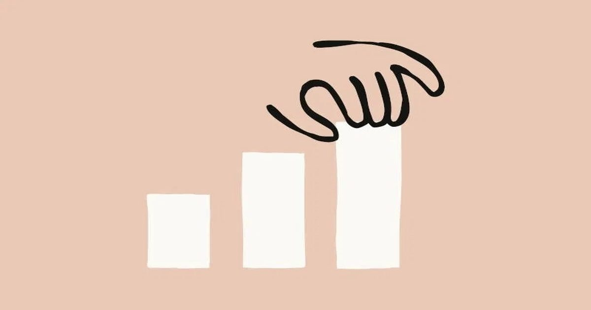

Как оценивать новые косметологические методики: от маркетинга к доказам
Появление новой процедуры или технологии в косметологии часто сопровождается активным обсуждением и высокими ожиданиями. Со временем первоначальный ажиотаж сменяется более внимательным анализом со стороны специалистов и пациентов.
Этап появления: обещания и реальность
Когда на рынок выходит новаторская методика, производители и клиники часто акцентируют внимание на уникальности подхода и потенциальных преимуществах. В этот период информационное поле насыщается позитивными отзывами, экспертными мнениями и визуальными демонстрациями результатов, что формирует у аудитории представление о прорывном решении.
Важно помнить, что коммерческий запуск не всегда совпадает с накоплением достаточной клинической базы. Ранние публикации могут основываться на малых группах наблюдений, коротких сроках слежения или данных, полученных в идеальных условиях, которые не полностью отражают реальную практику.
Поэтому на этом этапе разумно относиться к заявленным эффектам как к гипотезам, требующим подтверждения. Пациенту полезно уточнять у врача, какие именно исследования лежат в основе протокола, и есть ли независимые подтверждения безопасности и эффективности.

Период критической оценки: что говорят эксперты
По мере накопления опыта применения сообщество косметологов начинает делиться наблюдениями о нюансах техники, профиле побочных реакций и длительности результата. На профильных конференциях и в рецензируемых журналах появляются сравнительные анализы с уже устоявшимися стандартами ухода.
Этот этап часто выявляет ограничения методики: круг показаний сужается, проясняются противопоказания, уточняются параметры процедуры для разных типов кожи. То, что выглядело универсальным решением, может оказаться эффективным только в определенных клинических ситуациях.
Для пациента этот момент наиболее информативен: становится возможным получить взвешенное мнение специалиста, не заинтересованного в продаже конкретного прибора или препарата. Стоит спрашивать врача о его личном опыте и о том, как изменилась его тактика за последние месяцы.

Формирование консенсуса: роль клинических данных
Долгосрочная репутация любой косметологической интервенции строится на системных обзорах, мета-анализах и рекомендациях профессиональных обществ. Эти документы синтезируют данные множества исследований, отсеивая случайные или смещенные результаты.
Процесс формирования консенсуса может занимать несколько лет. В это время методика может быть включена в клинические рекомендации как вариант лечения определенного состояния, получить статус «золотого стандарта» или, наоборот, быть признанной малоэффективной по сравнению с альтернативами.
Наличие в протоколе ссылки на позицию крупного профессионального сообщества (например, ассоциации дерматовенерологов или общества эстетической медицины) служит важным ориентиром. Отсутствие такого консенсуса не означает вредность, но указывает на необходимость особой осторожности и индивидуального взвешивания рисков.
Практический подход для пациента: вопросы специалисту
При выборе процедуры на любой стадии её жизненного цикла ключевую роль играет диалог с врачом. Стоит заранее подготовить список вопросов: каков механизм действия, какие есть опубликованные данные по безопасности для вашего фототипа кожи, какова частота осложнений в практике данного специалиста.
Не менее важно обсудить альтернативы: какие еще методы решают вашу задачу, как соотносятся их доказательные базы, стоимость, время восстановления и предсказуемость результата. Компетентный косметолог всегда представит варианты и аргументирует выбор в пользу конкретной тактики.
Помните, что эстетическая медицина — это область вероятностей, а не гарантий. Реалистичные ожидания, основанные на понимании этапов доказательной базы, помогают избежать разочарования и сделать осознанный шаг к улучшению качества кожи.
Коротко: Новые косметологические методики проходят путь от маркетингового ажиотажа к доказательной базе. Взвешенное решение требует времени, критического мышления и доверительного диалога с врачом.
На какие признаки вы обращаете внимание, когда оцениваете обещания новой процедуры?